“Noget er gået i stykker.”
Først afklarer vi, om det giver bedst mening at reparere, tilpasse, genskabe eller fremstille en ny del. En gammel del, et foto og nogle mål kan være nok til at komme i gang.
SPECIALDELE · PROTOTYPER · R&D
Godt. Så har vi noget at starte med.
Noget er gået i stykker. Noget passer ikke. Noget findes ikke endnu. Datum hjælper med at afklare, udvikle og fremstille en fysisk løsning.
Du behøver ikke have CAD, teknisk tegning eller det rigtige fagord klar. Et foto, en skitse, en gammel del, nogle mål eller en forklaring er nok til at starte.
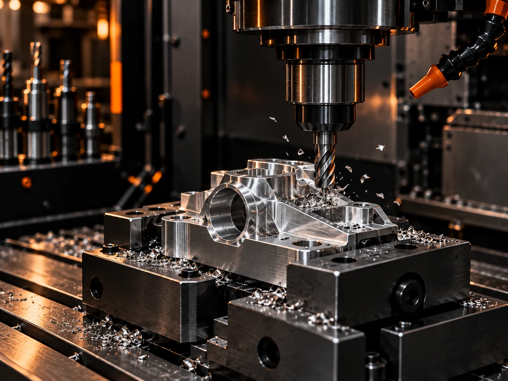
PROCESVISUALISERING01 / START HER
Du behøver ikke kende materiale, tolerance eller proces. Vælg bare det, der kommer tættest på.
FUNKTIONEN FØRST
Det vigtigste er ikke, om du kommer med en perfekt tegning, en slidt del eller bare en idé. Først finder vi ud af, hvad løsningen skal gøre, hvad den skal passe sammen med, og hvilke krav der faktisk betyder noget. Derefter giver geometri, materiale, tolerance og proces mening.
Først afklarer vi, om det giver bedst mening at reparere, tilpasse, genskabe eller fremstille en ny del. En gammel del, et foto og nogle mål kan være nok til at komme i gang.
En specialdel, adapter, erstatning eller ændring kan være løsningen, når hyldevaren ikke findes eller næsten passer. Nogle gange er en tilpasning nok; andre gange kræver det noget helt nyt.
Så starter vi dér. Idéen kan afklares, modelleres og prototypetestes, før der bruges tid og materiale på den endelige løsning.
PROJEKTER
Udvalgte projekter viser, hvordan geometri, procesvalg, opspænding, tolerancer og kontrol hænger sammen, når en idé eller tegning skal ende som et fysisk emne.
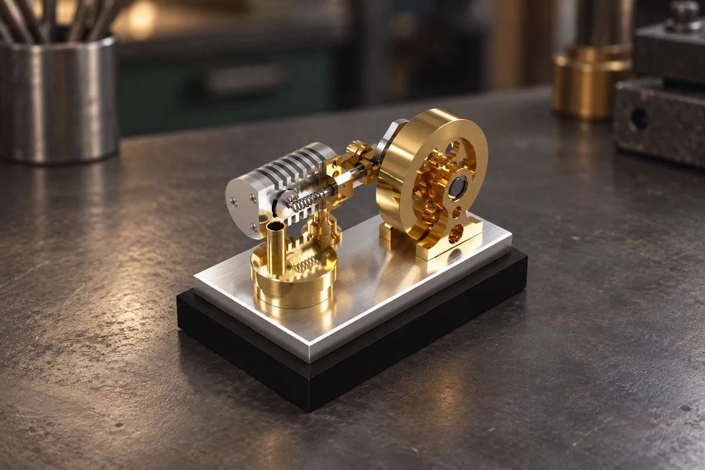
PROJEKTVISUALISERINGUDVALGT PROJEKT · FLAME EATER
UDDANNELSESPROJEKTUdgangspunktet var eksisterende tegninger. Delene skulle fortolkes, modelleres og fremstilles, så de til sidst fungerede som én samlet motor.
Delene blev modelleret i CAD og fordelt mellem CNC og manuel bearbejdning efter geometri, tolerance og den mest hensigtsmæssige proces.
Projektet gav praktisk erfaring med samspillet mellem tolerancer, overflader, pasninger og mekanisk funktion.
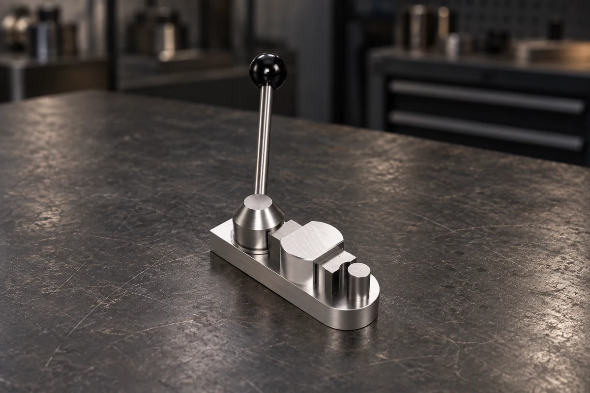
PROJEKTVISUALISERING PROJEKTVISUALISERING
PROJEKTVISUALISERING
FREMSTILLING
CNC, manuel bearbejdning og FDM 3D-print er forskellige veje til samme mål. CAD/CAM og målkontrol bruges, når de gør løsningen bedre — ikke fordi en bestemt proces skal sælges.
CNC-fræsning og CNC-drejning til geometrier, pasninger og gentagelighed, når programmeret bearbejdning er den mest kontrollerbare vej.
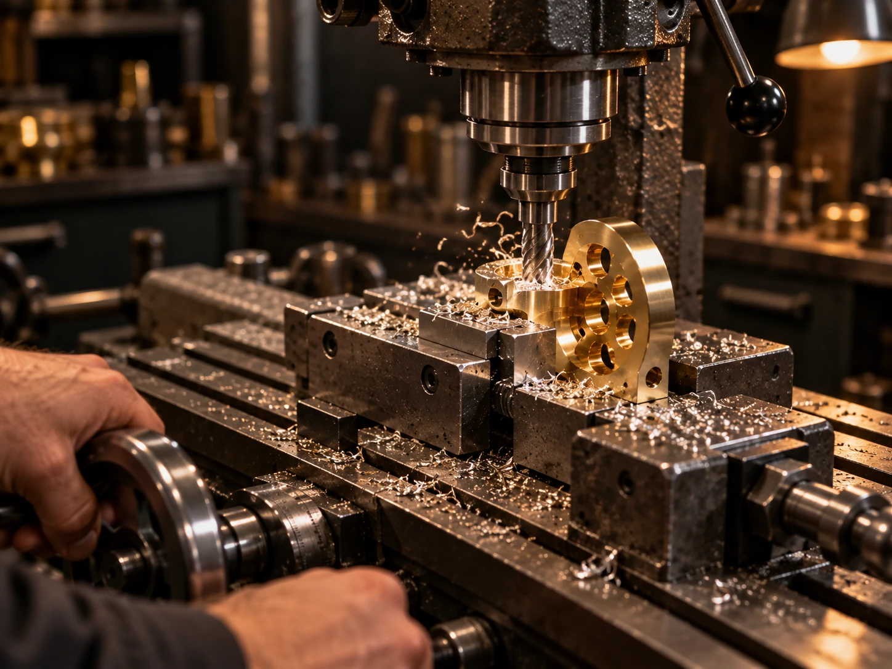
PROCESVISUALISERINGFræsning, drejning, boring, gevind og tilpasning til one-offs og opgaver, hvor fleksibilitet og løbende kontrol er en fordel.
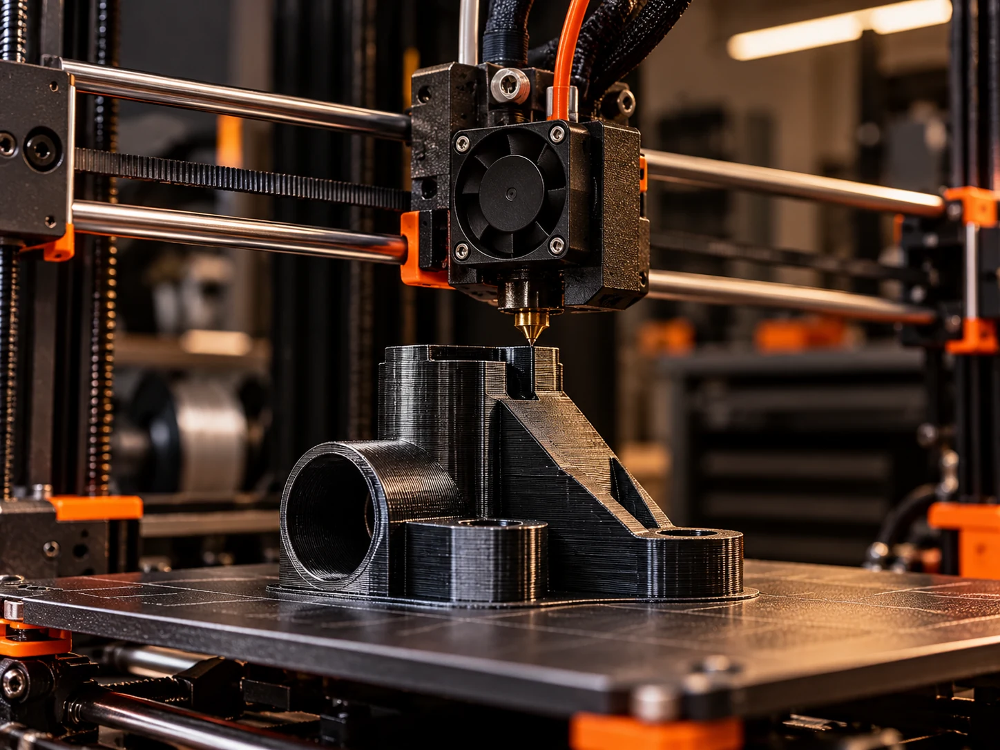
PROCESVISUALISERINGPrototyper, mockups og funktionelle plastdele, når geometri skal testes hurtigt, eller når FDM er den rigtige slutproces.
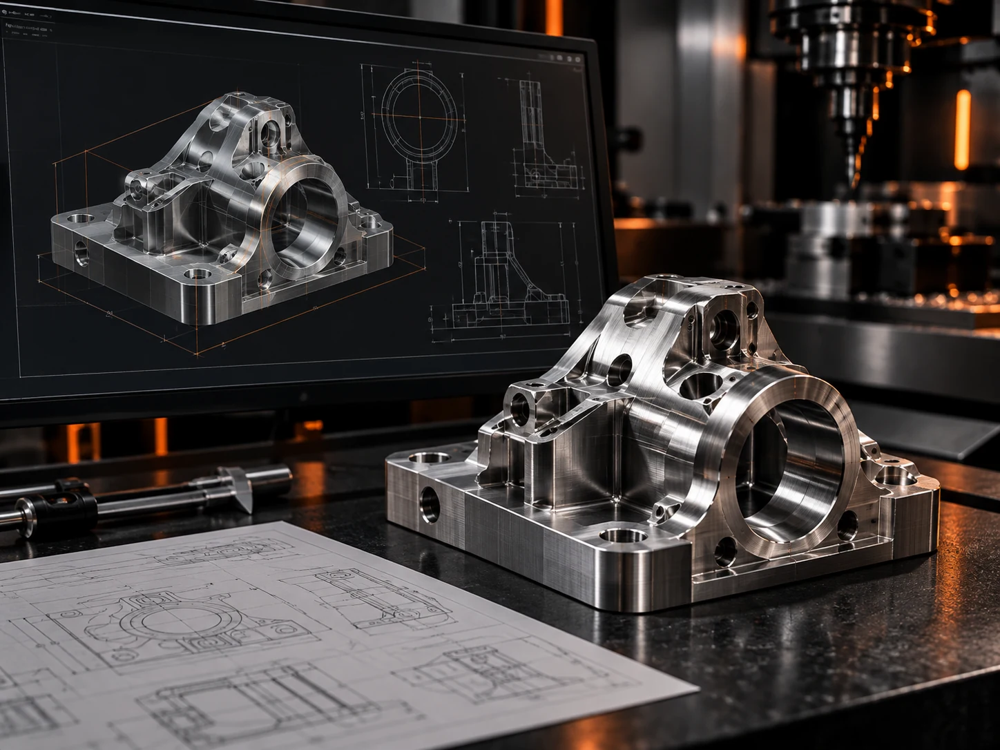
PROCESVISUALISERING3D-modellering, tilpasning og CAM bruges som en del af processen, når foto, skitse, eksisterende del eller CAD ikke allerede er produktionsklart.
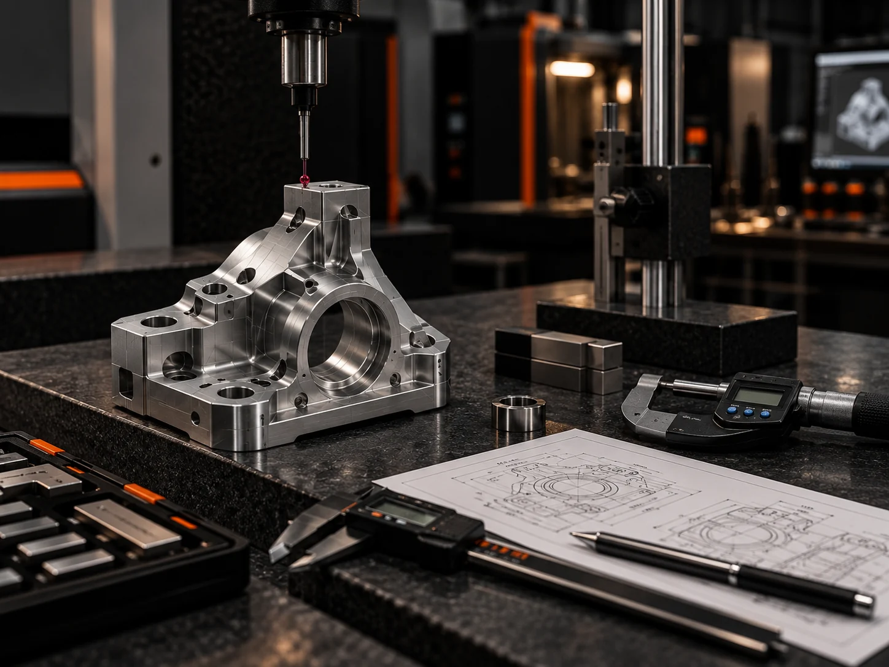
PROCESVISUALISERINGKritiske mål og pasninger kontrolleres undervejs. Dokumentation bruges, når opgaven har behov for den — ikke som pynt.
MATERIALER
Her er det, jeg typisk arbejder i. Andre materialer vurderes efter opgaven, værktøjet og hvad delen faktisk skal kunne.
Aluminium · Messing · Stål · Rustfast · Værktøjsstål
POM · Akryl · Nylon
PLA · PETG · Andre efter vurdering
PROCESSEN
Et kort, direkte forløb. Vi finder kun de oplysninger, der faktisk er nødvendige for at vælge en fornuftig løsning og fremstille den ordentligt.
Vi afklarer, hvad du starter med — idé, eksisterende del, foto, skitse eller noget der ikke virker — og hvad løsningen faktisk skal kunne.
Geometri, materiale, tolerance og proces vælges ud fra funktion, omfang og hvad der er realistisk at fremstille.
Løsningen fremstilles, kritiske mål kontrolleres, og resultatet vurderes mod det vi har aftalt.
Datum Prototyping drives af mig, Glen. Jeg er under uddannelse som finmekaniker via skolepraktik (SKP) på TEC Frederiksberg og forventer svendebrev i april 2027.
Mellem hovedforløbene arbejder jeg selvstændigt med indgående opgaver fra egne kontakter og skolens kunder. Det giver praktisk erfaring med hele kæden fra CAD/CAM og procesplanlægning til CNC, manuel bearbejdning, målkontrol og dokumentation.
Datum er bygget langsigtet. Efter svendebrevet vil jeg fortsætte med at udvikle mig fagligt i branchen, mens Datum vokser videre med målet om på sigt at blive et selvstændigt prototype- og R&D-værksted.
NÅR STANDARD IKKE PASSER,
LAVER DATUM NOGET DER GØR.
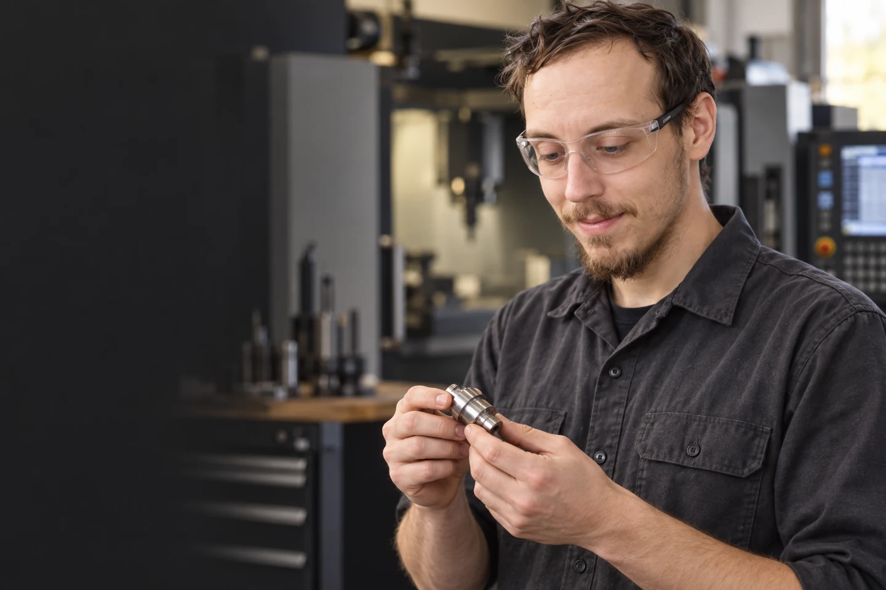
PORTRÆTVISUALISERINGKONTAKT
Valgene fra toppen følger med. Tilføj det sidste du ved om opgaven, og åbn forespørgslen direkte i din mail-app. Billeder, tegninger og andre filer vedhæfter du dér.
Når du sender en henvendelse, behandles dine oplysninger som beskrevet i privatlivspolitikken.
UDVALGT PROJEKT · UDDANNELSE
En komplet mekanisme fremstillet fra tegningssæt til fungerende motor.
Alle dele blev tegnet op i Fusion 360, så geometri, tolerancer og fremstillingsrækkefølge kunne gennemgås før bearbejdningen.
Projektet kombinerede CNC og manuel bearbejdning, flere metaller og kritiske pasninger. Fokus var funktion frem for bare enkeltstående dele.
Cylinder, stempel og øvrige funktionsmål blev behandlet som dele af samme mekanisme. Kontrol undervejs gjorde det muligt at reagere før slutmontage.
Projektet samlede CAD/CAM, manuel bearbejdning, CNC, målkontrol og montage i én opgave.
PROJEKT / OVERBLIK
Specialværktøj til kontrolleret bukning.
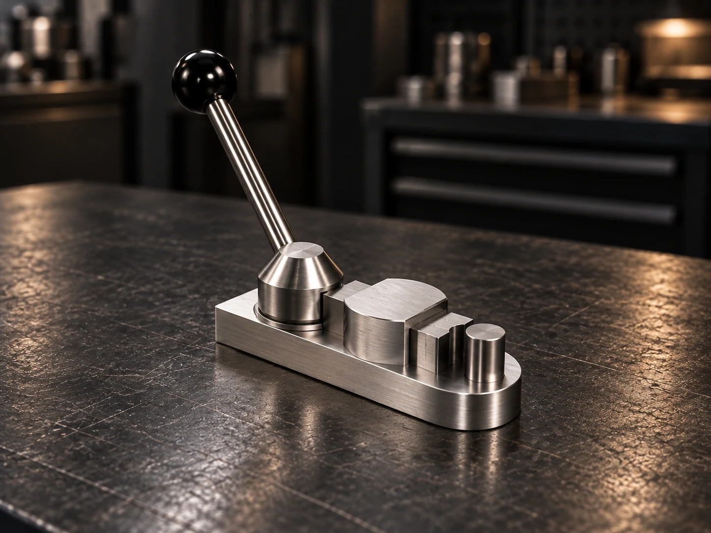
PROJEKTVISUALISERING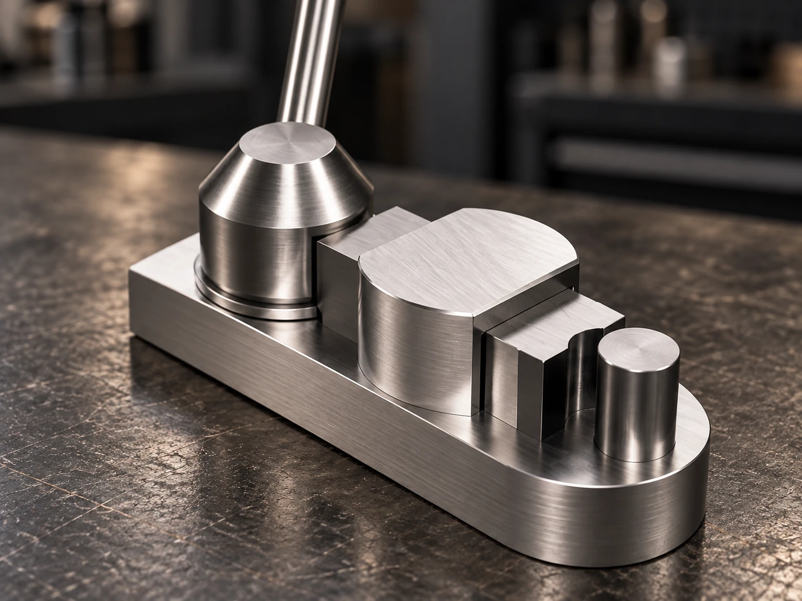
PROJEKTVISUALISERINGProjektet viser den type opgave hvor standardværktøj ikke nødvendigvis passer: en konkret fysisk udfordring omsat til en enkel mekanisk løsning.
Emnerne blev fordelt mellem drejning og fræsning ud fra deres geometri og funktion.
PROJEKT / OVERBLIK
CNC-fræset emne med fokus på planhed, opspænding og operationsrækkefølge.
PROJEKTVISUALISERING
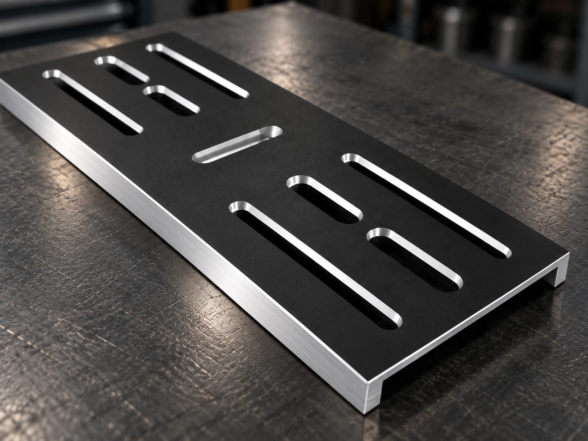
PROJEKTVISUALISERING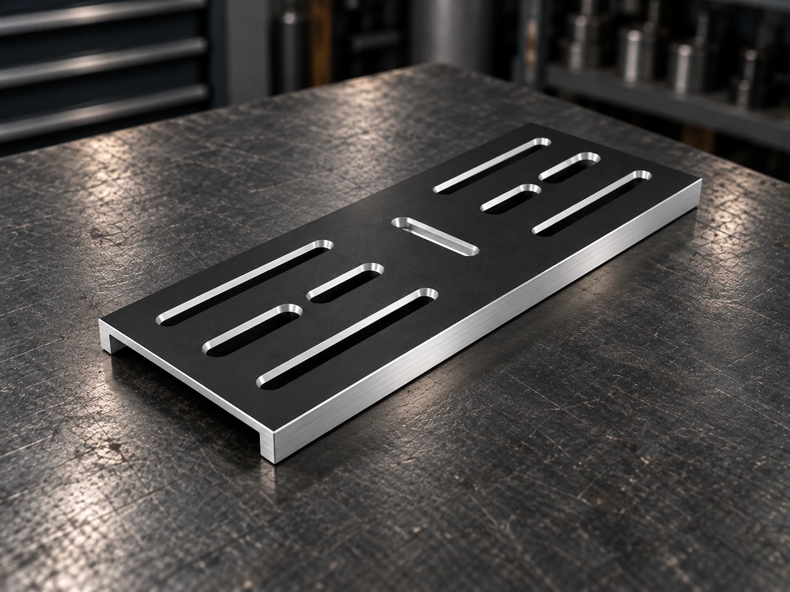
PROJEKTVISUALISERINGProjektet handlede ikke kun om værktøjsbaner, men også om hvordan emnet blev holdt stabilt gennem de nødvendige operationer.
Opspænding, værktøjer, WCS og operationsrækkefølge er dokumenteret i projektets setup sheet.
Åbn setup sheet ↗